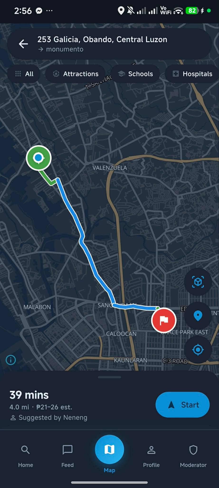
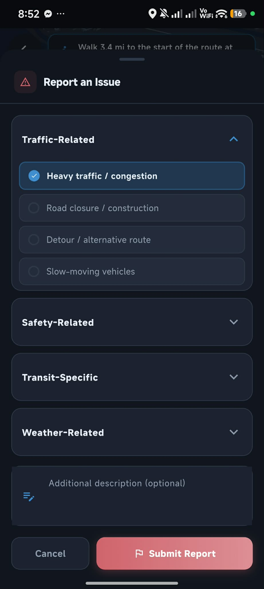
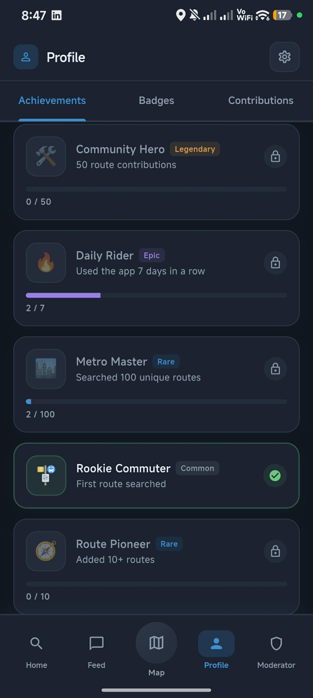
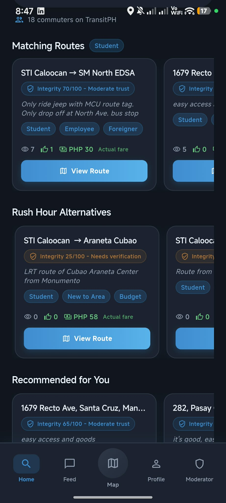
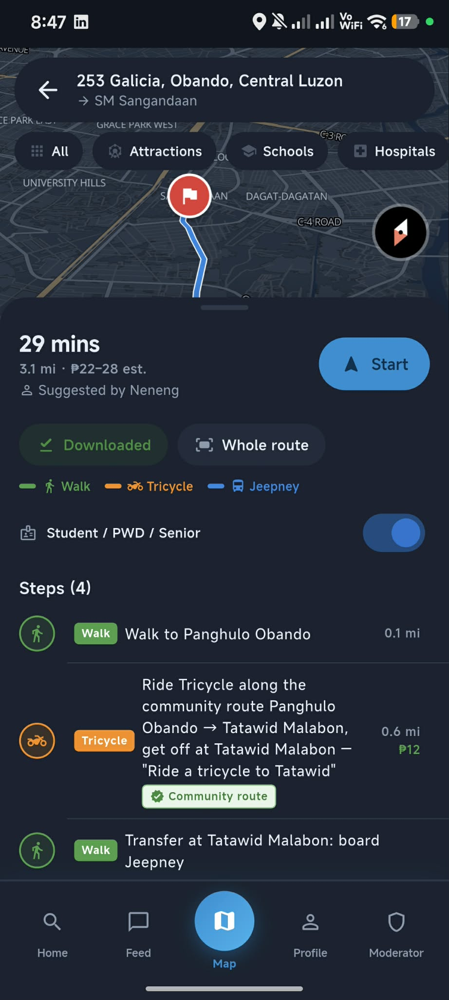
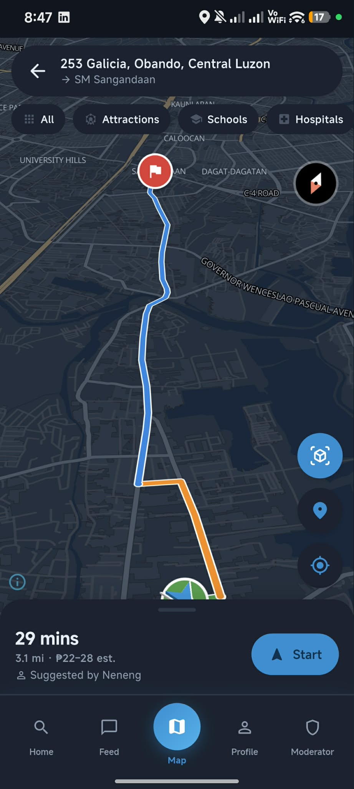
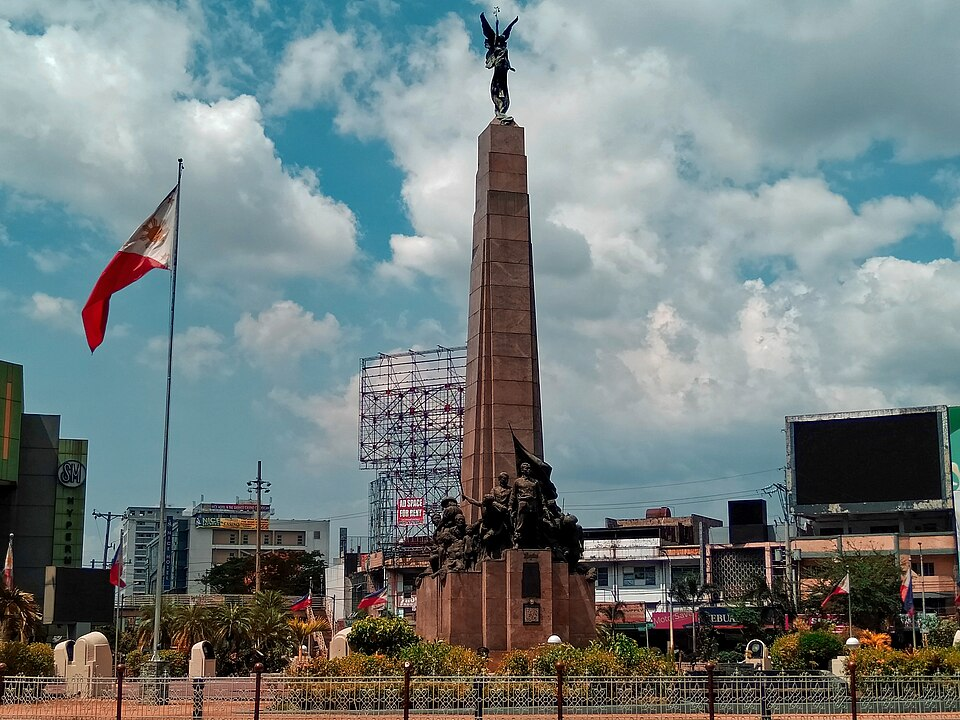
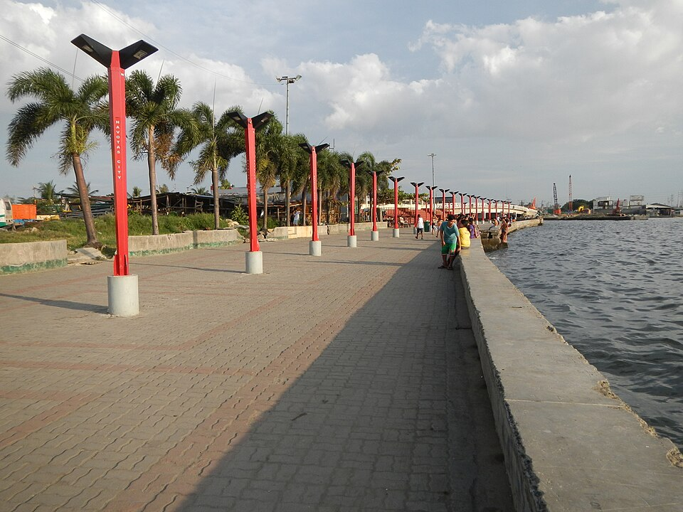
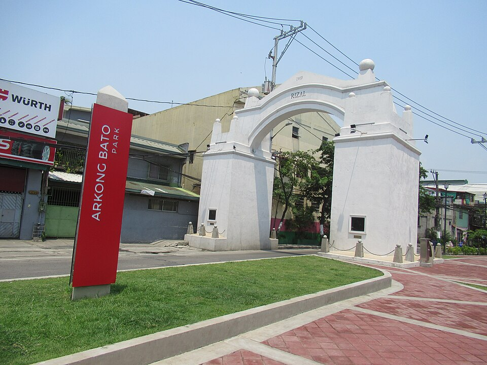

Built for CAMANAVA commuters
Your everyday route companion.
TransitPH is a community-driven mobile application that helps commuters find routes, terminals, and fare estimates across Caloocan, Malabon, Navotas, and Valenzuela.

Try it
Plot a trip across CAMANAVA
A little taste of the app. Tap two stops on the map (or use the lists) and watch the route get plotted.
Schematic map, not to scale. Times and fares are illustrative.
Features
Everything for the everyday trip
Practical tools for planning and understanding everyday trips around CAMANAVA. Pick one to peek inside.
assets/photos/screen-updates.jpg
Real Time Updates
Get transit updates shared by fellow commuters in the community.
assets/photos/screen-route.jpgRoute Planning
Plan trips with route options, estimated travel times, and fare information.
Try the route plannerassets/photos/screen-badges.jpg
Gamification
Earn badges and achievements while traveling.
assets/photos/screen-community.jpg
Community-Based
Help improve local transit information for the whole community.
assets/photos/screen-fare.jpg
assets/photos/screen-map.jpg
Map
Explore 2D and 3D maps to find routes, terminals, and useful points of interest.
Flip the demo map to 3DCommunity
Made for the way CAMANAVA moves
Four cities, one community. A look at the places TransitPH is built for.
assets/photos/community-caloocan.jpg
assets/photos/community-malabon.jpgassets/photos/community-navotas.jpg
assets/photos/community-valenzuela.jpg
Download TransitPH
Download the current Android APK and start exploring better local routes.
Prefer your phone? Scan to download the APK.
About
About TransitPH
Our Purpose
TransitPH is a student-developed mobile application designed to help commuters access and understand public transportation information in Caloocan, Malabon, Navotas, and Valenzuela (CAMANAVA).
Our Project
TransitPH was developed as a thesis project based on common commuting challenges such as finding routes, identifying unfamiliar terminals, and estimating transportation fares. The project explores how community-contributed information can support commuters in navigating local public transportation.
Community-Based Approach
TransitPH incorporates commuter contributions to help collect and improve transportation information. The project aims to provide information that is relevant to the local commuting experience while recognizing that routes, fares, and transportation conditions may change.